values = seq(-10,10,length.out = 100)
density = dnorm(values)
plot(density)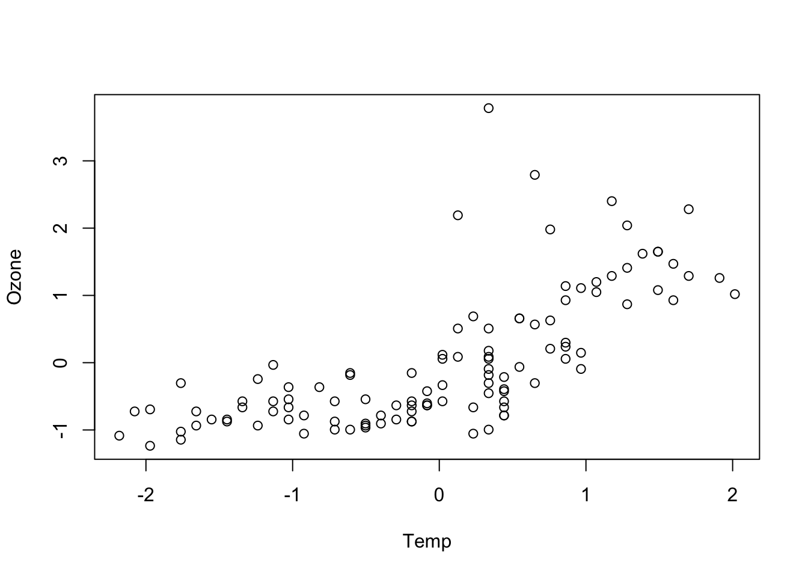
In the previous chapter, we have calculated our posterior distribution by multiplying prior and likelihood across a set of possible values, and then dividing by the sum of all those to standardize (this is the p(D) in the Bayesian formula). In all but the most simple models, this technique will not work.
The reason is the so-called “curse of dimensionality” - imagine we have a statistical model with 20 parameters. Imagine we would say for each of this 20 parameters, we consider 20 possible values to evaluate the shape of the posterior - the number of values we would have to calculate would be
\[n = 20^{20} \approx 10^{26}\] which is probably larger than the memory of your computer. Thus, we need another way to calculate the shape of the posterior. The main method to do this in Bayesian inference is MCMC sampling.
A Markov-Chain Monte-Carlo algorithm (MCMC) is an algorithm that jumps around in a density function (the so-called target function), in such a way that the probability to be at each point of the function is proportional to the target. To give you a simple example, let’s say we wouldn’t know how the normal distribution looks like. What you would then probably usually do is to calculate a value of the normal for a number of data points
values = seq(-10,10,length.out = 100)
density = dnorm(values)
plot(density)
To produce the same picture with an MCMC sampler, we will use the BayesianTools package. Here the code to sample from a normal distribution:
library(BayesianTools)
density = function(x) dnorm(x, log = T)
setup = createBayesianSetup(density, lower = -10, upper = 10)
out = runMCMC(setup, settings = list(iterations = 1000), sampler = "Metropolis")BT runMCMC: trying to find optimal start and covariance values BT runMCMC: Optimization finished, setting startValues to 1.4901160971803e-08 - Setting covariance to 0.99999713415048
Running Metropolis-MCMC, chain iteration 100 of 1000 . Current logp: -3.915425 Please wait!
Running Metropolis-MCMC, chain iteration 200 of 1000 . Current logp: -3.952539 Please wait!
Running Metropolis-MCMC, chain iteration 300 of 1000 . Current logp: -4.330099 Please wait!
Running Metropolis-MCMC, chain iteration 400 of 1000 . Current logp: -4.801967 Please wait!
Running Metropolis-MCMC, chain iteration 500 of 1000 . Current logp: -4.04227 Please wait!
Running Metropolis-MCMC, chain iteration 600 of 1000 . Current logp: -4.129271 Please wait!
Running Metropolis-MCMC, chain iteration 700 of 1000 . Current logp: -4.062493 Please wait!
Running Metropolis-MCMC, chain iteration 800 of 1000 . Current logp: -4.430568 Please wait!
Running Metropolis-MCMC, chain iteration 900 of 1000 . Current logp: -3.943009 Please wait!
Running Metropolis-MCMC, chain iteration 1000 of 1000 . Current logp: -4.060668 Please wait! runMCMC terminated after 0.239secondsplot(out)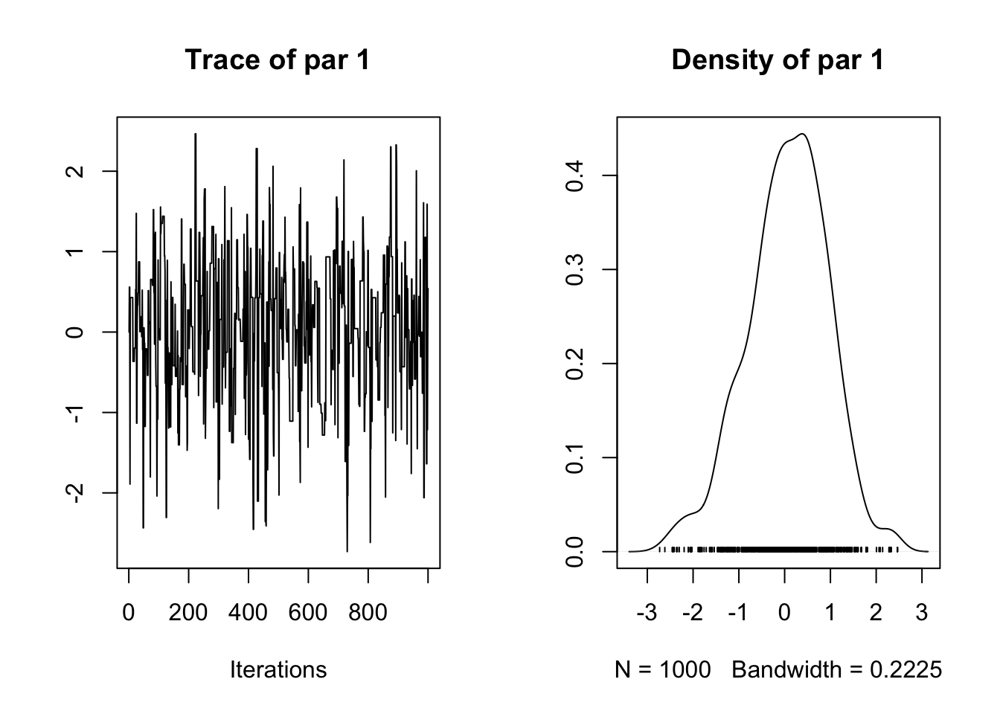
What we get as a result is the so-called trace plot to the left, which shows us how the sampler jumped around in parameter space over time, and the density plot to the right, which shows us results of sampling from the normal distribution.
For this simple case, this is not particularly impressive, and looks exactly like the plot that we coded above, using the seq approach. However, as discussed above, the first approach will break down if we have high-dimensional multivariate distributions, wheras MCMC sampling also works for high-dimensional problems.
If you are interested in how an MCMC sampler works internally, you can look at Appendix Appendix B.
So, how can we MCMC sample from statistical models? We will discuss this by showing you different code options to fit the relationship between Ozone and Temperature in the dataset airquality, using a linear regression.
plot(Ozone ~ Temp, data = airquality)
First, removing NAs and scaling all variables for convenience
airqualityCleaned = airquality[complete.cases(airquality),]
airqualityCleaned = data.frame(scale(airqualityCleaned))Just as a reminder: as a frequentist, you would fit the linear regression via
fit <- lm(Ozone ~ Temp, data = airqualityCleaned)which would calculate the MLE and p-values for this model, and you could evaluate and summarize the results of this via
summary(fit)
library(effects)
plot(allEffects(fit, partial.residuals = T))
par(mfrow = c(2,2))
plot(fit) # residualsNow, we want to estimate the posterior distribution for this model, using MCMC sampling. I will show you four different options to do this:
The simplest option is to use brms. brms is a package that allows you to specify regression models in the formula syntax that is familiar to you from standard frequentist R function and packages such as lm, lme4, etc. The application is straightforward
In the background, brms will translate your command into a STAN model (see below), fit this model, and return the results!
Here, we see the MCMC chains and the estimated posterior distributions for the intercept, Temperature slope and the residual error sigma.
plot(fit, ask = FALSE)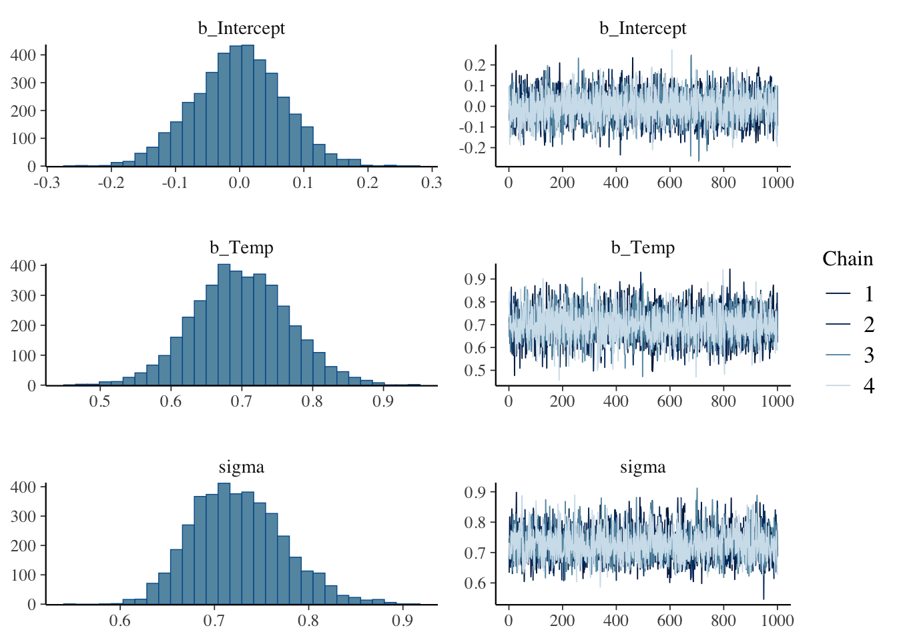
If we want, we could summary the results via
summary(fit)
#summary(fit, robust = T) # uses posterior median instead of mean
#summary(fit, priors = T) # shows also the priors
#plot(conditional_effects(fit), ask = FALSE)As said, what the brms package does is to translate the model you specify into STAN code. STAN is an MCMC sampler that allows you to estimate posteriors for any statistical model. The model is provided to the sampler in a particular syntax. You can look at this syntax for your brms model, using
fit$model # model that is actually fit via This looks a bit overwhelming, but let’s try to unpack this: in STAN, you don’t have a particular function for the linear regression, you just tell the sampler how all your data points are connected. You do this in at least three steps, which I show in a more minimal code for a linear regression below:
The model code is specified as a string, and then given to the sampler together with a list of the data.
library(rstan)
stanmodelcode <- "
data {
int<lower=0> N;
vector[N] Temp;
vector[N] Ozone;
}
parameters {
real intercept;
real TempEffect;
real<lower=0> sigma;
}
model {
Ozone ~ normal(intercept + TempEffect * Temp, sigma);
}
"
dat = list(Ozone = airqualityCleaned$Ozone,
Temp = airqualityCleaned$Temp,
N = nrow(airqualityCleaned))
fit <- stan(model_code = stanmodelcode, model_name = "example",
data = dat, iter = 2012, chains = 3, verbose = TRUE,
sample_file = file.path(tempdir(), 'norm.csv')) The results are the same as before - here is how the MCMC jumps around in parameter space
rstan::traceplot(fit)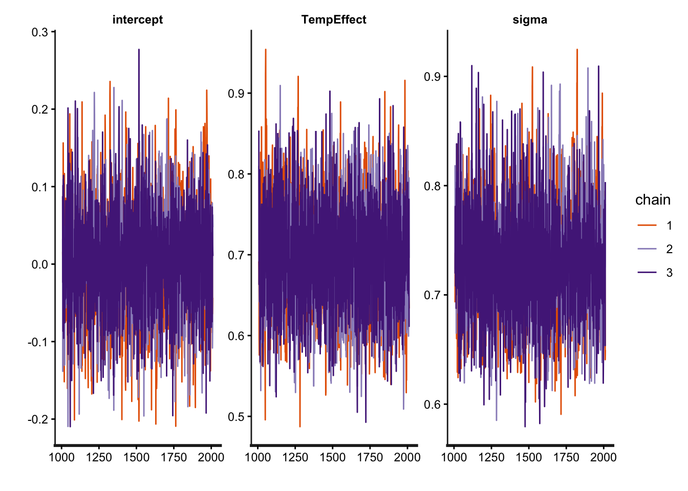
and if you want summaries of the posterior, you can run:
print(fit)
plot(fit)The second option is to use JAGS.
The general approach in JAGS is to
library(rjags)
modelCode = "
model{
# Likelihood
for(i in 1:nobs){
mu[i] <- a*x[i]+ b
y[i] ~ dnorm(mu[i],tau) # dnorm in jags parameterizes via precision = 1/sd^2
}
# Prior distributions
# For location parameters, normal choice is wide normal
a ~ dnorm(0,0.0001)
b ~ dnorm(0,0.0001)
# For scale parameters, normal choice is decaying
tau ~ dgamma(0.001, 0.001)
sigma <- 1/sqrt(tau) # this line is optional, just in case you want to observe sigma or set sigma (e.g. for inits)
}
"Setup model by
Data = list(y = airqualityCleaned$Ozone,
x = airqualityCleaned$Temp,
nobs = nrow(airqualityCleaned))
inits.fn <- function() list(a = rnorm(1),
b = rnorm(1),
tau = 1/runif(1,1,100))
jagsModel <- jags.model(file= textConnection(modelCode),
data=Data,
init = inits.fn,
n.chains = 3)Compiling model graph
Resolving undeclared variables
Allocating nodes
Graph information:
Observed stochastic nodes: 111
Unobserved stochastic nodes: 3
Total graph size: 310
Initializing modelMCMC sample from the model, have to provide the variables that should be observed (i.e. saved in the output)
Samples <- coda.samples(jagsModel,
variable.names = c("a","b","sigma"),
n.iter = 5000)Plot the mcmc chain and the posterior sample
plot(Samples)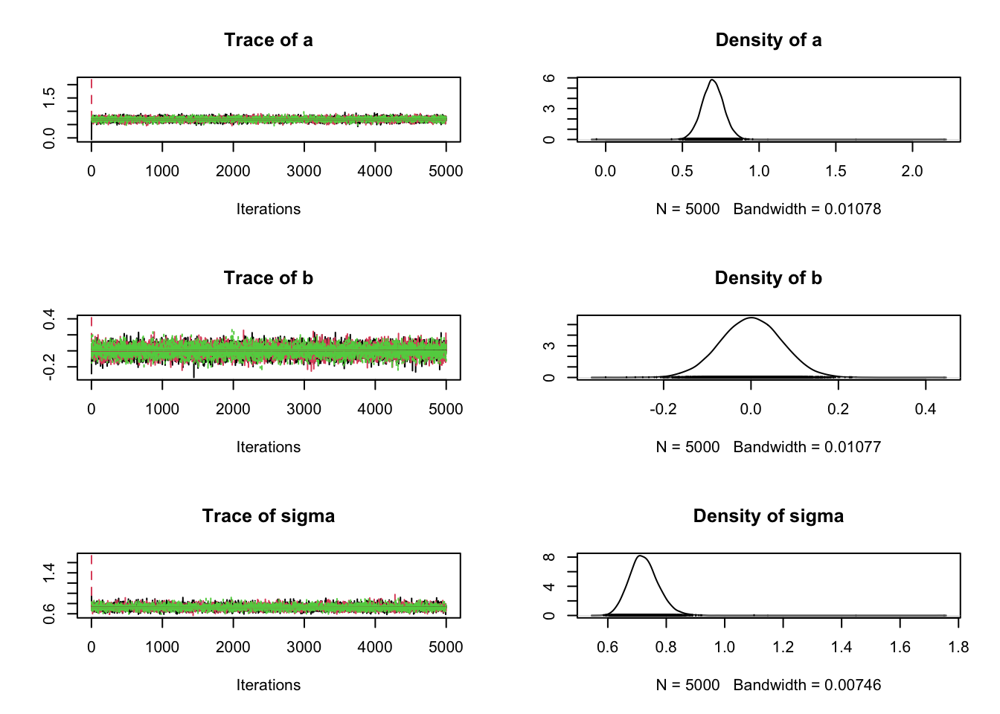
summary(Samples)
Iterations = 1:5000
Thinning interval = 1
Number of chains = 3
Sample size per chain = 5000
1. Empirical mean and standard deviation for each variable,
plus standard error of the mean:
Mean SD Naive SE Time-series SE
a 0.6977267 0.07038 0.0005747 0.0005853
b 0.0005394 0.06953 0.0005677 0.0005731
sigma 0.7237441 0.05021 0.0004100 0.0004288
2. Quantiles for each variable:
2.5% 25% 50% 75% 97.5%
a 0.5620 0.65102 0.6973405 0.74424 0.8355
b -0.1370 -0.04638 0.0008874 0.04748 0.1354
sigma 0.6347 0.68978 0.7208076 0.75432 0.8294Here, we don’t use a model specification language, but just write out the likelihood as an standard R function. The same can be done for the prior. For simplicity, in this case I just used flat priors using the lower / upper arguments.
library(BayesianTools)
likelihood <- function(par){
a0 = par[1]
a1 = par[2]
sigma <- par[3]
logLikel = sum(dnorm(a0 + a1 * airqualityCleaned$Temp - airqualityCleaned$Ozone , sd = sigma, log = T))
return(logLikel)
}
setup <- createBayesianSetup(likelihood = likelihood, lower = c(-10,-10,0.01), upper = c(10,10,10), names = c("a0", "a1", "sigma"))
out <- runMCMC(setup)plot(out)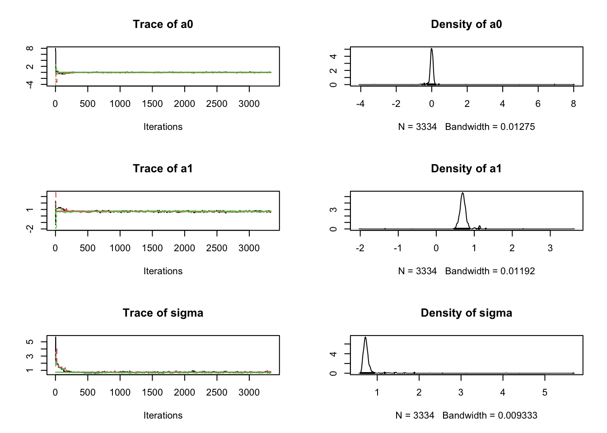
summary(out, start = 1000)# # # # # # # # # # # # # # # # # # # # # # # # #
## MCMC chain summary ##
# # # # # # # # # # # # # # # # # # # # # # # # #
# MCMC sampler: DEzs
# Nr. Chains: 3
# Iterations per chain: 2335
# Rejection rate: 0.759
# Effective sample size: 483
# Runtime: 0.481 sec.
# Parameters
psf MAP 2.5% median 97.5%
a0 1.003 -0.004 -0.122 -0.001 0.135
a1 1.008 0.697 0.561 0.693 0.824
sigma 1.010 0.720 0.636 0.723 0.846
## DIC: 256.191
## Convergence
Gelman Rubin multivariate psrf:
We will continue here with the JAGS model, but in principle the idea of MCMC checking remains the same for all samplers
Running the sampler again to get some samples.
jagsModel <- jags.model(file= textConnection(modelCode),
data=Data,
init = inits.fn,
n.chains = 3)Compiling model graph
Resolving undeclared variables
Allocating nodes
Graph information:
Observed stochastic nodes: 111
Unobserved stochastic nodes: 3
Total graph size: 310
Initializing modelSamples <- coda.samples(jagsModel,
variable.names = c("a","b","sigma"),
n.iter = 5000)Except for details in the syntax, the following is more or less the same for all samplers.
First thing should always be convergence checks. Visual look at the trace plots,
plot(Samples)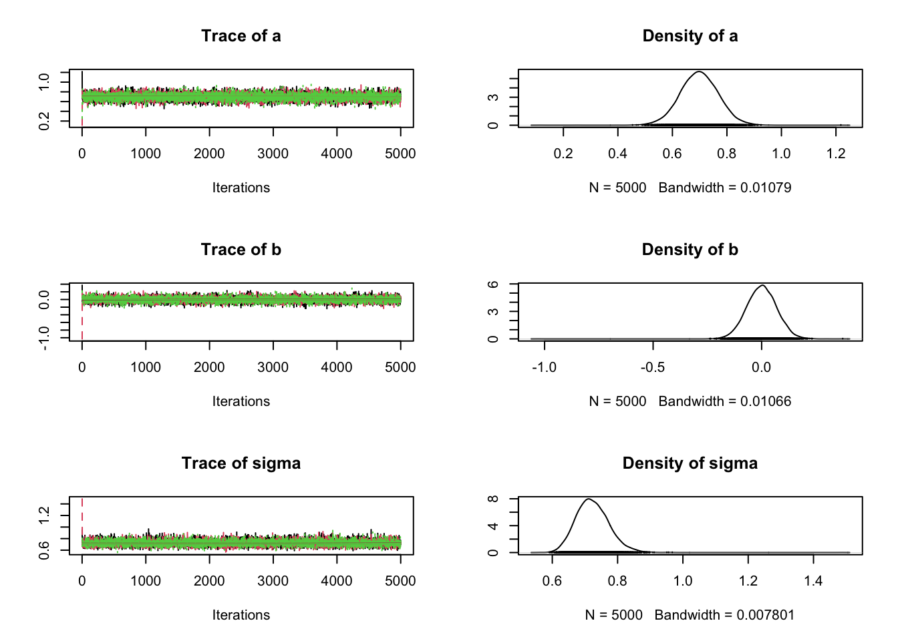
We want to look at
Further convergence checks should be done AFTER removing burn-in
coda::acfplot(Samples)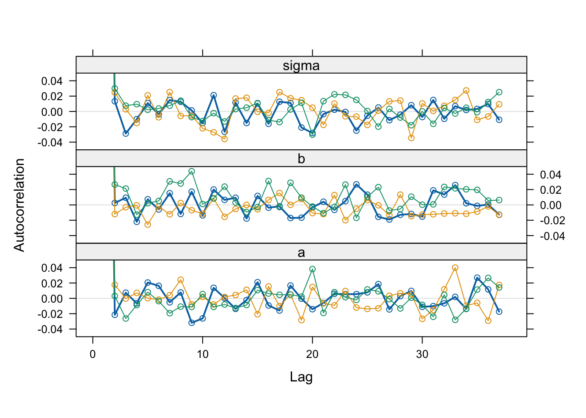
Formal convergence diagnostics via
coda::gelman.diag(Samples)Potential scale reduction factors:
Point est. Upper C.I.
a 1 1
b 1 1
sigma 1 1
Multivariate psrf
1coda::gelman.plot(Samples)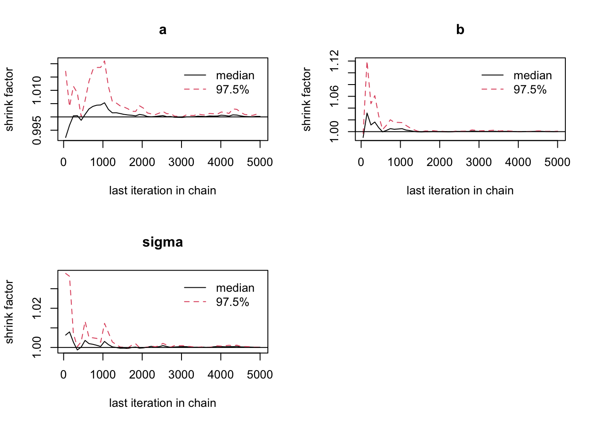
No fixed rule but typically people require univariate psrf < 1.05 or < 1.1 and multivariate psrf < 1.1 or 1.2
Note that the psrf rule was made for estimating the mean / median. If you want to estimate more unstable statistics, e.g. higher quantiles or other values such as the MAP or the DIC (see section on model selection), you may have to run the MCMC chain much longer to get stable outputs.
library(BayesianTools)
bayesianSetup <- createBayesianSetup(likelihood = testDensityNormal,
prior = createUniformPrior(lower = -10,
upper = 10))
out = runMCMC(bayesianSetup = bayesianSetup, settings = list(iterations = 3000))The plotDiagnostics function in package BT shows us how statistics develop over time
plotDiagnostic(out)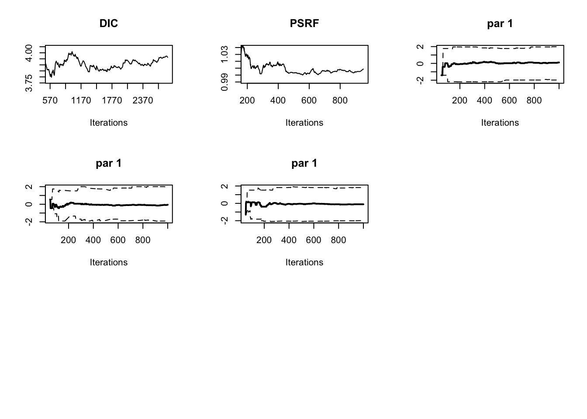
summary(Samples)
Iterations = 1:5000
Thinning interval = 1
Number of chains = 3
Sample size per chain = 5000
1. Empirical mean and standard deviation for each variable,
plus standard error of the mean:
Mean SD Naive SE Time-series SE
a 0.6985475 0.06975 0.0005695 0.0005655
b 0.0004653 0.06881 0.0005618 0.0005916
sigma 0.7235715 0.05042 0.0004117 0.0004173
2. Quantiles for each variable:
2.5% 25% 50% 75% 97.5%
a 0.5612 0.65201 0.6982775 0.74538 0.8364
b -0.1323 -0.04576 0.0005221 0.04652 0.1338
sigma 0.6340 0.68831 0.7202887 0.75579 0.8315Highest Posterior Density intervals
HPDinterval(Samples)[[1]]
lower upper
a 0.5566484 0.8268833
b -0.1344142 0.1318912
sigma 0.6234513 0.8198871
attr(,"Probability")
[1] 0.95
[[2]]
lower upper
a 0.5726803 0.8454339
b -0.1300379 0.1309395
sigma 0.6229101 0.8189825
attr(,"Probability")
[1] 0.95
[[3]]
lower upper
a 0.5574137 0.8332865
b -0.1326775 0.1354785
sigma 0.6320223 0.8216405
attr(,"Probability")
[1] 0.95Marginal plots show the parameter distribution (these were also created in the standard coda traceplots)
BayesianTools::marginalPlot(Samples)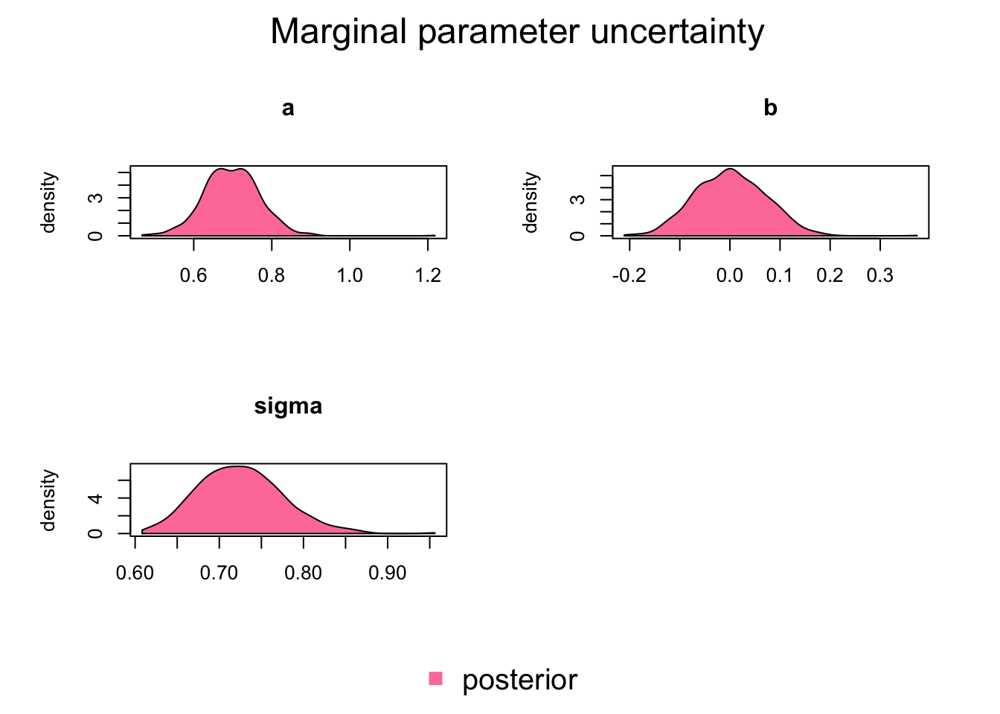
Pair correlation plots show 2nd order correlations
# coda
coda::crosscorr.plot(Samples)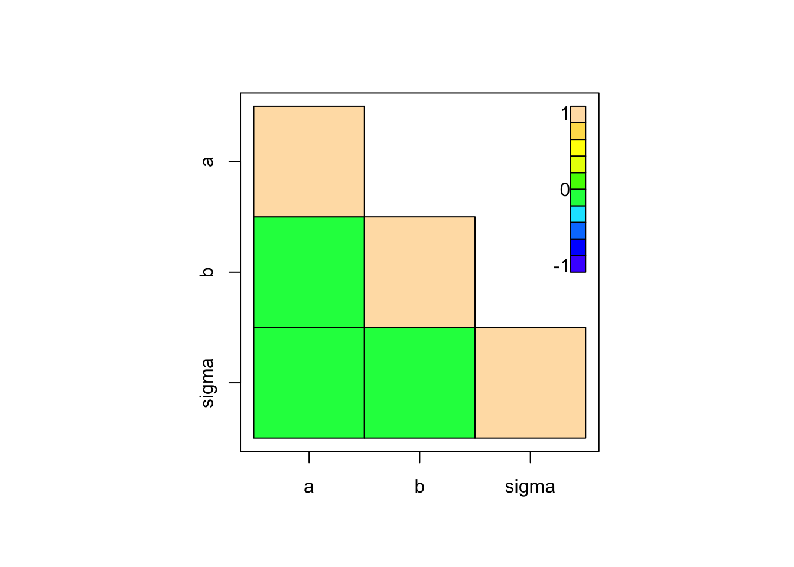
#BayesianTools
correlationPlot(Samples)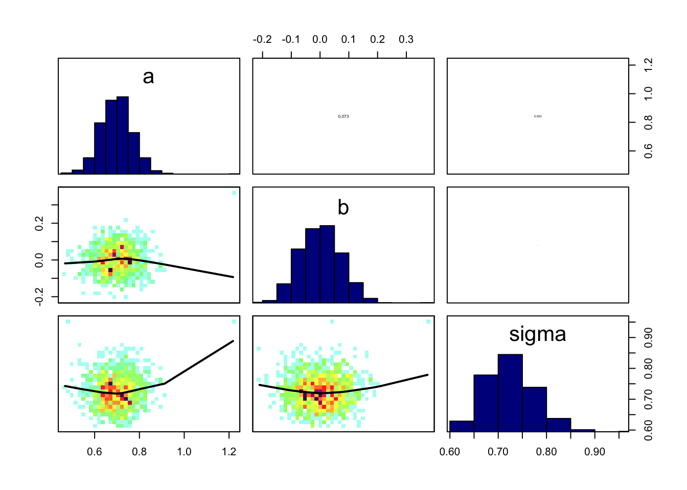
dat = as.data.frame(Data)[,1:2]
dat = dat[order(dat$x),]
# raw data
plot(dat[,2], dat[,1])
# extract 1000 parameters from posterior from package BayesianTools
x = getSample(Samples, start = 300)
pred = x[,2] + dat[,2] %o% x[,1]
lines(dat[,2], apply(pred, 1, median))
lines(dat[,2], apply(pred, 1, quantile, probs = 0.2),
lty = 2, col = "red")
lines(dat[,2], apply(pred, 1, quantile, probs = 0.8),
lty = 2, col = "red")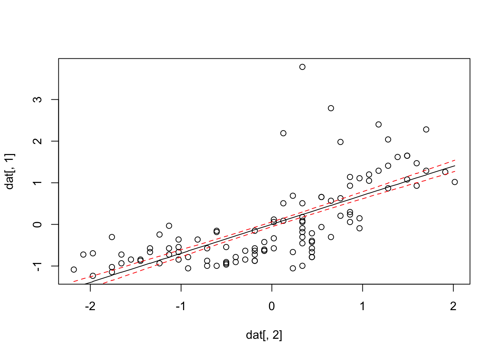
# alternative: plot all 1000 predictions in transparent color
plot(dat[,2], dat[,1])
for(i in 1:nrow(x)) lines(dat[,2], pred[,i], col = "#0000EE03")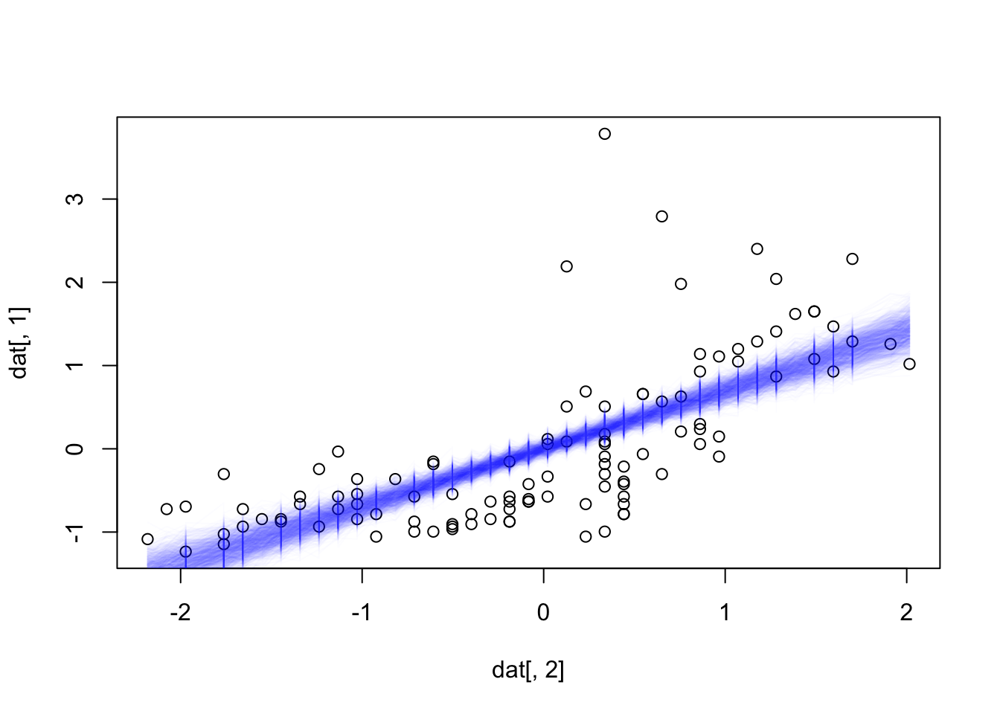
# important point - so far, we have plotted the credible interval for the regression line
# in frequentist terms, this is known as the confidence interval vs. the prediction interval
# in the second case below, we add the residual (observation-level) uncertainty to get the prediction interval
pred = x[,2] + dat[,2] %o% x[,1]
for(i in 1:nrow(x)) {
pred[,i] = pred[,i] + rnorm(length(pred[,i]), 0, sd = x[i,3])
}
plot(dat[,2], dat[,1])
lines(dat[,2], apply(pred, 1, median))
lines(dat[,2], apply(pred, 1, quantile, probs = 0.2), lty = 2, col = "red")
lines(dat[,2], apply(pred, 1, quantile, probs = 0.8), lty = 2, col = "red")
#alternative plotting
polygon(x = c(dat[,2], rev(dat[,2])),
y = c(apply(pred, 1, quantile, probs = 0.2),
rev(apply(pred, 1, quantile, probs = 0.8))),
col = "#EE000020")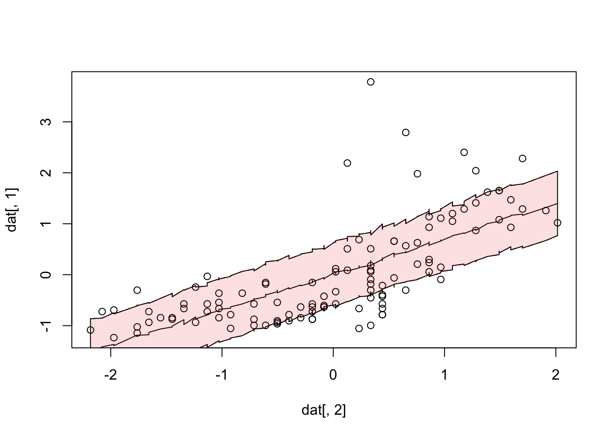
So far, we have bypassed a bit the biggest problem in a Bayesian analysis - the choice of the prior
The choice of prior (prior elicitation) is key to Bayesian analysis, and it is arguably the most contentious step in the whole procedure, as it supposedly contains “subjective” judgement. I disagree with this notion. The choice of a prior is not necessarily subjective. It simply means that, unlike in a frequentist analysis, we should generally collect everything that is known about a parameter in advance, which may be done in an objective way. Also, we can try to avoid the inclusion of prior knowledge by choosing so-called uninformative (aka vague, reference) priors. So, a first thing to note about priors is that we have
More about the choice of uninformative priors below. But first some other statements:
Scaling is key to understand why uninformative priors can’t always be flat. Imagine the following situation: we have a dataset on average tree diameters, and we want to infer the average with a Bayesian method. We shouldn’t really look at the data before we specify our prior, so let’s just specify the prior, and assume we choose a flat prior between 1 and 10 because we don’t want to bias our data in any way
values = 1:5
priorWeight = rep(1/5, 5)
barplot(priorWeight, names.arg = values, xlab = "size [cm]",
ylab = "priorProbability", col = "darkseagreen")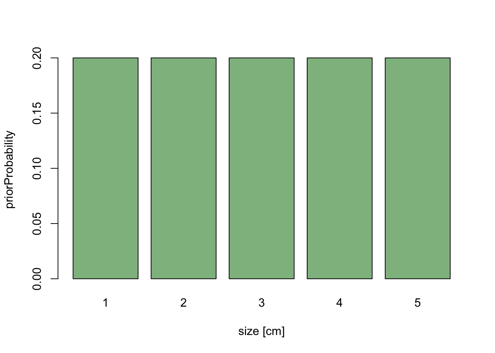
Now, let’s assume that we decide to change the analysis slightly, and measure average size in the basal area, which scales to diameter as x^2. We have already specified our prior knowledge about diameter, so for each cm of diameter we have specified the same weight.
If we rescale the x-axis to basal area, the length of each bar on the x-axis changes - large values are getting broader, short values are getting more narrow. If the probability weight is to stay the same, we get the following picture:
barplot(priorWeight/values^2, width = values^2, names.arg = values^2,
xlab = "size [cm^2]", ylab = "priorProbability", col = "darkseagreen")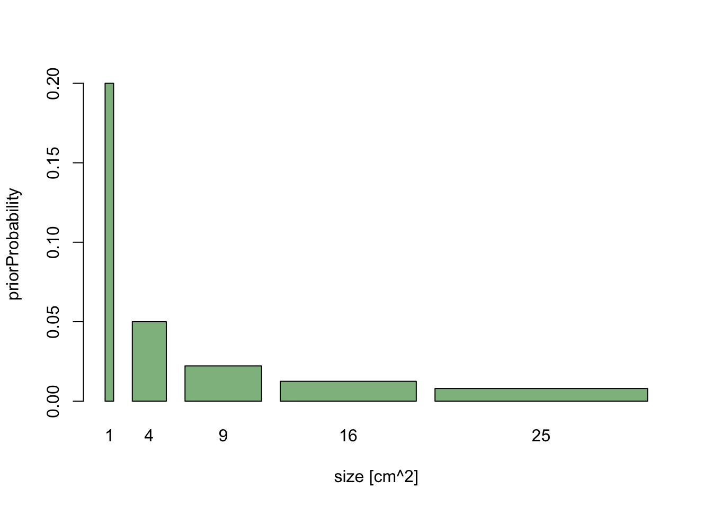
The message here is that if we are free to rescale predictors as we want (which is generally true), the prior cannot be flat for all possible parameter transformations. A key for any rule about finding uninformative priors is therefore that the rule must be invariant under parameter transformation. For more on this, see (George and McCulloch 1993).
A second message is that in Bayesian statistics, you have to be a bit careful about parameter transformations, because we don’t just look at one value, but at a whole distribution, and the shape of this distribution will change if we reparameterize.
So, what is the right choice for uninformative priors? The somewhat disturbing answer is that there is no generally accepted solution for this problem. One famous proposal that contains many of the desirable properties is Jeffrey’s prior which is defined as
p(phi) ~ sqrt ( det ( F(phi)))
where F(phi) is the Fisher information matrix, which basically tells you how strongly the likelihood changes if parameters change. It is easy to see that the prior choice will then be
To me, this seems to cover the main agreements about prior choice. Unfortunately, Jeffrey’s prior seems to have some problems for multivariate and hierarchical models, so it’s not a general panacea. However, partly based on the intuition gained from Jeffrey’s prior, a few general default prior choices have emerged:
For scale parameters (something that affects the output linearly, like slope or intercept in a regression), use flat or quasi flat priors such as a bounded uniform distribution or (most common choice) a wide normal distribution. Note that, people often modify these priors by having a bit more probability mass around a neutral value (usually 0) to get the Bayesian analogue of Lasso or Ridge regression, see Park, T. & Casella, G. (2008), Kyung, M.; Gill, J.; Ghosh, M.; Casella, G. et al. (2010) Penalized regression, standard errors, and Bayesian lassos. Bayesian Analysis, 5, 369-411. If this effect is small, we speak about mildly regularizing priors. If the effect is strong, we speak about shrinkage priors. Shrinkage priors can be designed with a fixed or adaptive shrinkage, where fixed means that the strength of the shrinkage (e.g. controlled by the sd in a normal prior) is fixed, whereas adaptive shrinkage priors fit the shrinkage via a hyperprior.
For variance parameters (something like the standard deviation in a linear regression), use decaying parameters such as 1/x (standard choice according to Jeffrey’s prior) or inverse-gamma (very common choice because of conjugacy, see next subsection)
For variance hyperparameters in hierarchical models, use again decaying priors such as inverse-gamma or half-t family (suggested by Gelman, 2006)
For binomial distribution, Jeffrey’s prior is a beta(1/2,1/2) - this is a good default choice.
In doubt, prior effects can be examined by varying the prior in a sensitivity analysis.
See also
Another issue that is often important is conjugacy. In Bayesian statistics, if the posterior distributions p(θ|x) are in the same family as the prior probability distribution p(θ), the prior and posterior are then called conjugate distributions, and the prior is called a conjugate prior for the likelihood function.
Conjugacy has two main advantages:
One therefore traditionally preferred to specify conjugate priors if possible, although the advantages of this depend on the samplers that are used. Most modern samplers do not really require conjugacy to work well.
Uninformative priors
Kass, R. E. & Wasserman, L. (1996) The selection of prior distributions by formal rules. J. Am. Stat. Assoc., American Statistical Association, 91, 1343-1370.
Jeffreys, H. (1946) An Invariant Form for the Prior Probability in Estimation Problems. Proceedings of the Royal Society of London. Series A, Mathematical and Physical Sciences, The Royal Society, 186, 453-461.
Jaynes, E. (1968) Prior probabilities. Systems Science and Cybernetics, IEEE Transactions on, IEEE, 4, 227-241.
Tibshirani, R. (1989) Noninformative priors for one parameter of many. Biometrika, 76, 604-608.
Park, T. & Casella, G. (2008) The Bayesian Lasso. Journal of the American Statistical Association, 103, 681-686.
Irony, T. Z. & Singpurwalla, N. D. (1997) Non-informative priors do not exist – a dialogue with José M. Bernardo. J. Stat. Plan. Infer., 65, 159-177.
Gelman, A.; Jakulin, A.; Pittau, M. G. & Su, Y.-S. (2008) A weakly informative default prior distribution for logistic and other regression models. The Annals of Applied Statistics, JSTOR, , 1360-1383.
Gelman, A. (2006) Prior distributions for variance parameters in hierarchical models. Bayesian Analysis, Citeseer, 1, 515-533.
Fong, Y.; Rue, H. & Wakefield, J. (2010) Bayesian inference for generalized linear mixed models. Biostatistics, 11, 397-412.
Ferguson, T. (1974) Prior distributions on spaces of probability measures. The Annals of Statistics, JSTOR, 2, 615-629.
Jeffrey’s prior
Jeffreys priors for mixture estimation http://arxiv.org/abs/1511.03145
Informative priors
Choy, S. L.; O’Leary, R. & Mengersen, K. (2009) Elicitation by design in ecology: using expert opinion to inform priors for Bayesian statistical models. Ecology, 90, 265-277
Priors are not scale-free. What that means: dnorm(0,0.0001) might not be an uninformative prior, if the data scale is extremely small so that you might expect huge effect sizes - scaling all variables makes sure we have a good intuition of what “uninformative means”.
Task: play with the following minimal script for a linear regression to understand how scaling parameter affects priors and thus posterior shapes. In particular, change
Then compare Bayesian parameter estimates and their uncertainty to Bayesian estimates. How would you have to change the priors to fix this problem and keep them uninformative?
Task 2: implement mildly informative priors as well as strong shrinkage priors in the regression. Question to discuss: should you put the shrinkage also in the intercept? Why should you center variables if you include a shrinkage prior on the intercept?
library(rjags)
dat = airquality[complete.cases(airquality),]
# scaling happens here - change
dat$Ozone = as.vector(scale(dat$Ozone))
dat$Temp = as.vector(scale(dat$Temp))
Data = list(y = dat$Ozone,
x = dat$Temp,
i.max = nrow(dat))
# Model
modelCode = "
model{
# Likelihood
for(i in 1:i.max){
mu[i] <- Temp*x[i]+ intercept
y[i] ~ dnorm(mu[i],tau)
}
# Prior distributions
# For location parameters, typical choice is wide normal
intercept ~ dnorm(0,0.0001)
Temp ~ dnorm(0,0.0001)
# For scale parameters, typical choice is decaying
tau ~ dgamma(0.001, 0.001)
sigma <- 1/sqrt(tau) # this line is optional, just in case you want to observe sigma or set sigma (e.g. for inits)
}
"
# Specify a function to generate inital values for the parameters (optional, if not provided, will start with the mean of the prior )
inits.fn <- function() list(a = rnorm(1), b = rnorm(1),
tau = 1/runif(1,1,100))
# Compile the model and run the MCMC for an adaptation (burn-in) phase
jagsModel <- jags.model(file= textConnection(modelCode), data=Data, init = inits.fn, n.chains = 3)
# Run a bit to have a burn-in
update(jagsModel, n.iter = 1000)
# Continue the MCMC runs with sampling
Samples <- coda.samples(jagsModel, variable.names = c("intercept","Temp","sigma"), n.iter = 5000)
# Bayesian results
summary(Samples)
# MCMC results
fit <- lm(Ozone ~ Temp, data = dat)
summary(fit)In the analysis above, we removed missing data. What happens if you are leaving the missing data in in a Jags model in either x or y?
Try it out by adding
dat$Temp[c(1,5,12)] = NA
dat$Ozone[c(1,5,12)] = NAto the code below and discuss what happens. To check in more detail, consider observing x and y!
library(rjags)
dat = airquality[complete.cases(airquality),]
dat$Ozone = as.vector(scale(dat$Ozone))
dat$Temp = as.vector(scale(dat$Temp))
Data = list(y = dat$Ozone,
x = dat$Temp,
i.max = nrow(dat))
modelCode = "
model{
# Likelihood
for(i in 1:i.max){
mu[i] <- Temp*x[i]+ intercept
y[i] ~ dnorm(mu[i],tau)
}
# Prior distributions
# For location parameters, typical choice is wide normal
intercept ~ dnorm(0,0.0001)
Temp ~ dnorm(0,0.0001)
# For scale parameters, typical choice is decaying
tau ~ dgamma(0.001, 0.001)
sigma <- 1/sqrt(tau) # this line is optional, just in case you want to observe sigma or set sigma (e.g. for inits)
}
"
jagsModel <- jags.model(file= textConnection(modelCode),
data=Data,
n.chains = 3)
update(jagsModel, n.iter = 1000)
Samples <- coda.samples(jagsModel,
variable.names = c("intercept","Temp","sigma"),
n.iter = 5000)
summary(Samples)